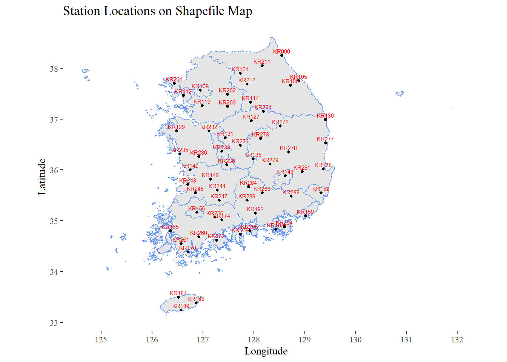
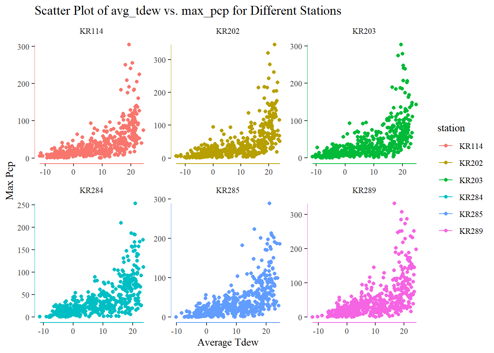
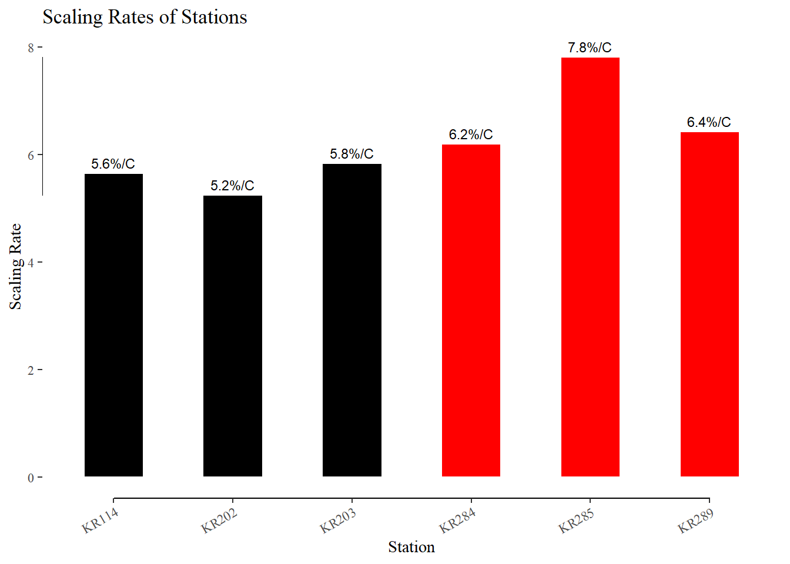

station = read.csv("kma_asos_61stns.csv")Fit to GEV with 5 different locations
Choose 6 KMA stations
Map of each station in South Korea
library(ggplot2)Warning: package 'ggplot2' was built under R version 4.3.2library(ggthemes)Warning: package 'ggthemes' was built under R version 4.3.2library(sf)shapefile <- st_read("2013_si_do.shp")Reading layer `2013_si_do' from data source
`D:\Min\Research Topic\Task\2013_si_do.shp' using driver `ESRI Shapefile'
Simple feature collection with 17 features and 4 fields
Geometry type: MULTIPOLYGON
Dimension: XY
Bounding box: xmin: 124.6112 ymin: 33.10912 xmax: 131.8744 ymax: 38.61485
CRS: NAstations_sf <- st_as_sf(station, coords = c("Lon", "Lat"), crs = st_crs(shapefile))
ggplot() +
geom_sf(data = shapefile, col = "cornflowerblue") +
geom_sf(data = stations_sf, size = 1) +
geom_sf_text(data = stations_sf, aes(label = ID), vjust = -0.5, hjust = 0.5, size = 2, col = "red") +
ggtitle("Station Locations on Shapefile Map") +
xlab("Longitude") +
ylab("Latitude")+
geom_rangeframe() + theme_tufte()
Since I want to inspect two groups of stations—one group will have three stations that are close to one another—I have chosen six places. I want to verify that the scaling rates of the stations that are close to one another are comparable in this instance.
| Group1 | Group2 |
|---|---|
| KR284 | KR202 |
| KR285 | KR203 |
| KR289 | KR114 |
Read Data and Data Cleaning
files_to_read <- c("KR284.csv", "KR285.csv", "KR289.csv", "KR202.csv", "KR203.csv", "KR114.csv")
for (file in files_to_read) {
var_name <- sub("\\.csv$", "", file)
assign(var_name, read.csv(file), envir = .GlobalEnv)
}Select Columns
library(dplyr)Warning: package 'dplyr' was built under R version 4.3.1
Attaching package: 'dplyr'The following objects are masked from 'package:stats':
filter, lagThe following objects are masked from 'package:base':
intersect, setdiff, setequal, unionlibrary(purrr)Warning: package 'purrr' was built under R version 4.3.1files <- c("KR284", "KR285", "KR289", "KR202", "KR203", "KR114")
select_columns <- function(data) {
filtered_data <- data %>%
filter(year >= 1980 & year != 2019) %>%
select(year, month, day, Pcp, Rhumidity, Tavg)
return(filtered_data)
}
processed_data <- map(files, ~select_columns(get(.x)))
list2env(setNames(processed_data, files), .GlobalEnv)<environment: R_GlobalEnv>Check If Rhumidity converted or not!
check_negative_rhumidity <- function(data) {
negative_rhumidity_rows <- filter(data, Rhumidity < 1)
if (nrow(negative_rhumidity_rows) > 1) {
cat("Years with Rhumidity < 1:", unique(negative_rhumidity_rows$year), "\n")
} else {
cat("No rows with Rhumidity < 1 found.\n")
}
}check_negative_rhumidity(KR284)Years with Rhumidity < 1: 1980 1981 1982 1983 1984 1985 1986 1987 1988 1989 1990 1991 1992 1993 1994 1995 1996 1997 1998 1999 2000 2001 2002 2003 2004 2005 2006 2007 2008 2009 2010 2011 2012 2013 2014 2015 2016 2017 2018 check_negative_rhumidity(KR285)Years with Rhumidity < 1: 1980 1981 1982 1983 1984 1985 1986 1987 1988 1989 1990 1991 1992 1993 1994 1995 1996 1997 1998 1999 2000 2001 2002 2003 2004 2005 2006 2007 2008 2009 2010 2011 2012 2013 2014 2015 2016 2017 2018 check_negative_rhumidity(KR289)Years with Rhumidity < 1: 1980 1981 1982 1983 1984 1985 1986 1987 1988 1989 1990 1991 1992 1993 1994 1995 1996 1997 1998 1999 2000 2001 2002 2003 2004 2005 2006 2007 2008 2009 2010 2011 2012 2013 2014 2015 2016 2017 2018 check_negative_rhumidity(KR202)Years with Rhumidity < 1: 1980 1981 1982 1983 1984 1985 1986 1987 1988 1989 1990 1991 1992 1993 1994 1995 1996 1997 1998 1999 2000 2001 2002 2003 2004 2005 2006 2007 2008 2009 2010 2011 2012 2013 2014 2015 2016 2017 2018 check_negative_rhumidity(KR203)Years with Rhumidity < 1: 1980 1981 1982 1983 1984 1985 1986 1987 1988 1989 1990 1991 1992 1993 1994 1995 1996 1997 1998 1999 2000 2001 2002 2003 2004 2005 2006 2007 2008 2009 2010 2011 2012 2013 2014 2015 2016 2017 2018 check_negative_rhumidity(KR114)Years with Rhumidity < 1: 1980 1981 1982 1983 1984 1985 1986 1987 1988 1989 1990 1991 1992 1993 1994 1995 1996 1997 1998 1999 2000 2001 2002 2003 2004 2005 2006 2007 2008 2009 2010 2011 2012 2013 2014 2015 2016 2017 2018 Before 2018, the Rhumidity is not converted yet.
Convert Rhumidity, Multiply it With 100
data <- lapply(files, function(file) {
data <- get(file)
data <- mutate(data, Rhumidity = ifelse(year <= 2018, Rhumidity * 100, Rhumidity))
data$station <- file
return(data)
}) %>%
bind_rows()
head(data) year month day Pcp Rhumidity Tavg station
1 1980 1 1 0.8 86.3 2.4 KR284
2 1980 1 2 11.6 89.3 3.6 KR284
3 1980 1 3 0.9 82.5 5.3 KR284
4 1980 1 4 0.0 63.8 2.1 KR284
5 1980 1 5 0.0 55.8 -2.8 KR284
6 1980 1 6 1.1 77.3 -1.5 KR284calculate_dewpoint <- function(temp, humidity) {
A <- 17.27
B <- 237.7
alpha <- ((A * temp) / (B + temp)) + log(humidity/100.0)
return ((B * alpha) / (A - alpha))
}
data <- data %>%
filter(Rhumidity >= 0)
data <- data %>%
mutate(Tdew = calculate_dewpoint(Tavg, Rhumidity))Select Non-Zero monthly maximum Pcp of each Station and Monthly Tdew
max_pcp <- data %>%
filter(Pcp > 0) %>%
group_by(station, year, month) %>%
summarize(max_pcp = max(Pcp)) `summarise()` has grouped output by 'station', 'year'. You can override using
the `.groups` argument.monthly_avg_tdew <- data %>%
filter(Pcp > 0) %>%
group_by(station, year, month) %>%
summarize(avg_tdew = mean(Tdew, na.rm = TRUE))`summarise()` has grouped output by 'station', 'year'. You can override using
the `.groups` argument.data <- left_join(monthly_avg_tdew, max_pcp, by = c("station", "year", "month"))Plot to Check the Relationship
ggplot(data, aes(x = avg_tdew, y = max_pcp, color = station)) +
geom_point() +
facet_wrap(~station, scales = "free") +
labs(title = "Scatter Plot of avg_tdew vs. max_pcp for Different Stations",
x = "Average Tdew", y = "Max Pcp")+
geom_rangeframe() + theme_tufte()
Calculate Scaling Rate
Fit monthly max Pcp of each Stations to GEV with Tdew as covariate to Location parameter
library(evd)Warning: package 'evd' was built under R version 4.3.2Station KR284
kr284 <- data[data$station == "KR284", ]
evd_res <- fgev(kr284$max_pcp,nsloc=as.data.frame(kr284$avg_tdew),std.err=T)
scaling_rate_284 = 100*evd_res$estimate[2]/evd_res$estimate[1]
cat('Scaling Rate of Station KR284 is: ', scaling_rate_284)Scaling Rate of Station KR284 is: 6.198925Station KR285
kr285 <- data[data$station == "KR285", ]
evd_res <- fgev(kr285$max_pcp,nsloc=as.data.frame(kr285$avg_tdew),std.err=T)
scaling_rate_285 = 100*evd_res$estimate[2]/evd_res$estimate[1]
cat('Scaling Rate of Station KR285 is: ', scaling_rate_285)Scaling Rate of Station KR285 is: 7.819038Station KR256
kr289 <- data[data$station == "KR289", ]
evd_res <- fgev(kr289$max_pcp,nsloc=as.data.frame(kr289$avg_tdew),std.err=T)
scaling_rate_289 = 100*evd_res$estimate[2]/evd_res$estimate[1]
cat('Scaling Rate of Station KR289 is: ', scaling_rate_289)Scaling Rate of Station KR289 is: 6.431452Station KR202
kr202 <- data[data$station == "KR202", ]
evd_res <- fgev(kr202$max_pcp,nsloc=as.data.frame(kr202$avg_tdew),std.err=T)
scaling_rate_202 = 100*evd_res$estimate[2]/evd_res$estimate[1]
cat('Scaling Rate of Station KR202 is: ', scaling_rate_202)Scaling Rate of Station KR202 is: 5.242106Station KR203
kr203 <- data[data$station == "KR203", ]
evd_res <- fgev(kr203$max_pcp,nsloc=as.data.frame(kr203$avg_tdew),std.err=T)
scaling_rate_203 = 100*evd_res$estimate[2]/evd_res$estimate[1]
cat('Scaling Rate of Station KR203 is: ', scaling_rate_203)Scaling Rate of Station KR203 is: 5.836146Station KR114
kr114 <- data[data$station == "KR114", ]
evd_res <- fgev(kr114$max_pcp,nsloc=as.data.frame(kr114$avg_tdew),std.err=T)
scaling_rate_114 = 100*evd_res$estimate[2]/evd_res$estimate[1]
cat('Scaling Rate of Station KR114 is: ', scaling_rate_114)Scaling Rate of Station KR114 is: 5.646393Comparison
scaling_rates <- data.frame(
station = c("KR284", "KR285", "KR289", "KR202", "KR203", "KR114"),
scaling_rate = c(6.198925, 7.819038, 6.431452, 5.242106, 5.836146, 5.646393),
group = c("group1", "group1", "group1", "group2", "group2", "group2")
)
print(scaling_rates) station scaling_rate group
1 KR284 6.198925 group1
2 KR285 7.819038 group1
3 KR289 6.431452 group1
4 KR202 5.242106 group2
5 KR203 5.836146 group2
6 KR114 5.646393 group2ggplot(scaling_rates, aes(x = station, y = scaling_rate, fill = group)) +
geom_col(position = "dodge", color = "white", width = 0.5, show.legend = FALSE) +
geom_text(aes(label = ifelse(group == "group1", scales::number(scaling_rate, accuracy = 0.1, suffix = "%/C", scale = 1),
scales::number(scaling_rate, accuracy = 0.1, suffix = "%/C", scale = 1, palette = "reds"))),
position = position_dodge(width = 0.5),
vjust = -0.5, color = "black", size = 3) +
labs(title = "Scaling Rates of Stations", x = "Station", y = "Scaling Rate") +
scale_fill_manual(values = c("group1" = "red", "group2" = "black")) +
geom_rangeframe() + theme_tufte() +
theme(axis.text.x = element_text(angle = 30, hjust = 1))